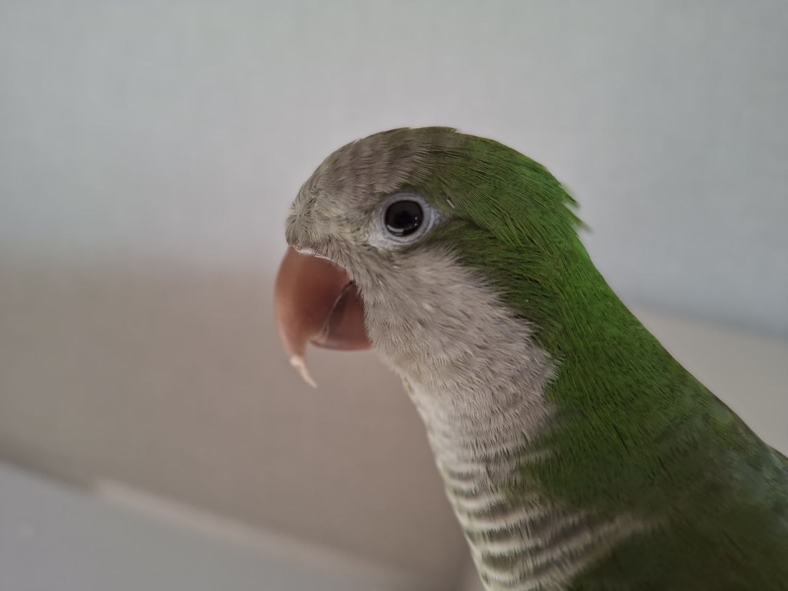

Фотографія птахів у природі
Я захоплююсь фотографією птахів та документуванням їхньої поведінки. Цей проєкт допомагає мені розвивати увагу до деталей, терпіння та навички роботи з технікою.
Переглянути →
Я захоплююсь фотографією птахів та документуванням їхньої поведінки. Цей проєкт допомагає мені розвивати увагу до деталей, терпіння та навички роботи з технікою.
Переглянути →
Невеликий проєкт, в якому я аналізую дані з медичних сенсорів та пристроїв для моніторингу здоров'я. Використовую Python та базові алгоритми статистики.
Переглянути код →
Створення невеликого симулятора на Python для моделювання руху кінцівок і аналізу навантажень на суглоби. Проєкт допомагає поєднувати знання з ортопедії та програмування.
Переглянути код →